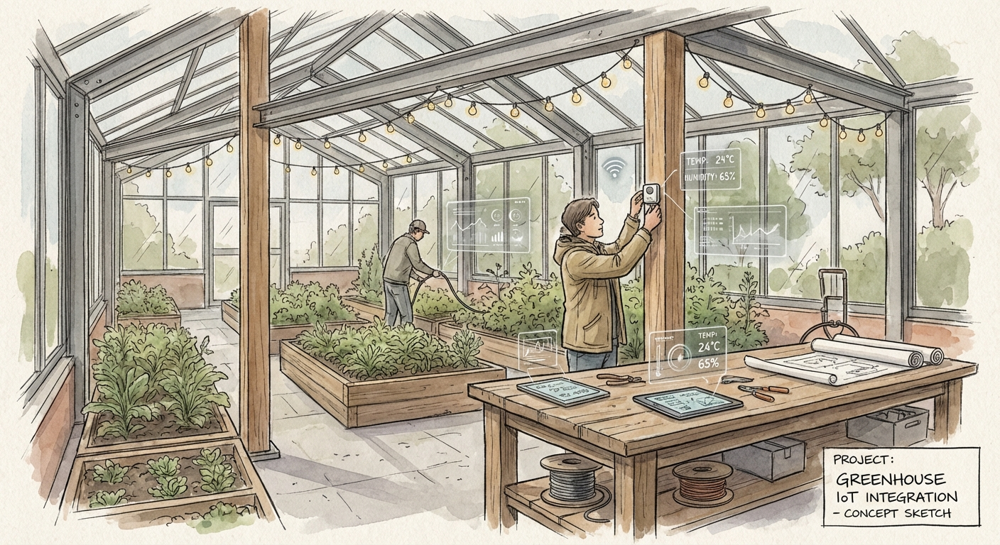
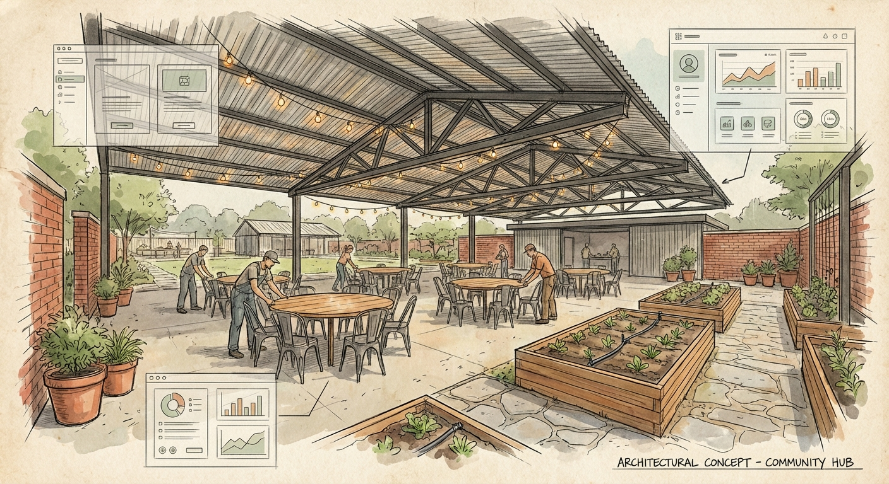
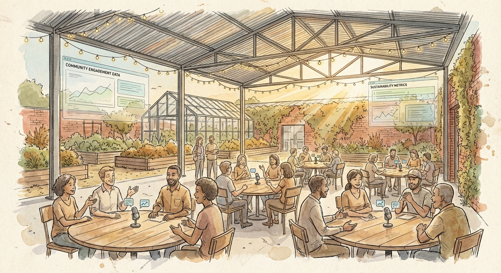
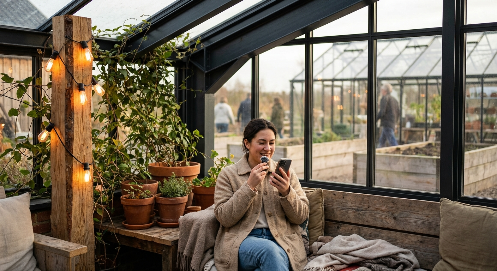
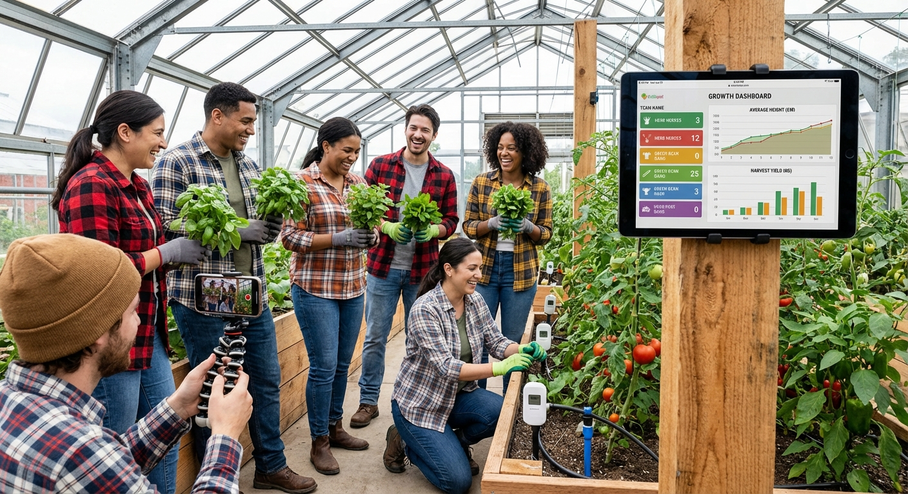
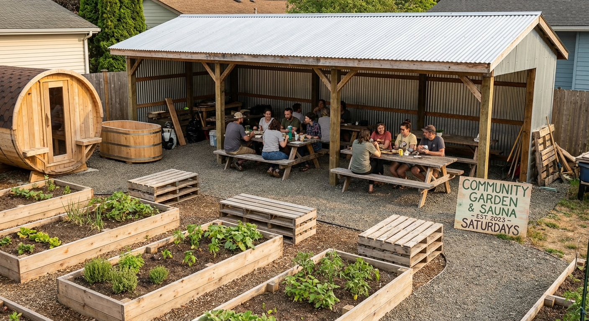

From first Sunday to full-scale — phased launch strategy
Everything starts with a site, the technology stack, and a single weekly event. Phase 1 is about proving the model works — that guests show up, conversations flow, plants grow, and the tech captures it all. Keep everything semi-portable in case the venue changes.
Find a rental or partner location — an industrial warehouse, garden center, or mixed-use space with high ceilings, natural light, and outdoor access. Prioritize spaces that can host 8+ round tables indoors and have adjacent land for raised garden beds. Assume the first site may not be permanent: design everything to be semi-portable.
Deploy the full software stack that guests and volunteers will interact with daily:

Install the physical technology layer that connects the space to the software:

Configure the physical environment for both social gatherings and horticulture:

Begin with a single weekly event every Sunday from 1:30p to 5:30p. This is the core product — a 4-hour immersive experience combining structured conversation, hands-on growing, and community building. All other days (Monday–Saturday) are work days for building, testing, and improving the space and technology.
Recruit a cohort of volunteers who serve a dual purpose: they work on building and maintaining the space during the week, and they beta-test the technology and attend events on Sundays. Volunteers are the first users — their feedback shapes every iteration of the product. They get early access, influence over the direction, and deep involvement in a community they're helping create.
Add wellness and comfort amenities over time as the space proves itself. Start with semi-portable versions that can move if the venue changes:
Each event is a structured, data-rich experience. From the pre-event voice interview to the post-event follow-up, every touchpoint generates insights that improve the next event.

Before the event, each guest receives an AI voice agent call. The interview captures their interests, dietary preferences, conversation topics they're passionate about, and what they hope to get from the experience. This data drives table assignments — matching people who will spark the most interesting conversations.
64 guests seated across 8 round tables, 8 people each. Table assignments are AI-optimized based on voice interview data — complementary interests, diverse backgrounds, and conversation chemistry. Each table has a discussion prompt or theme to seed the conversation.
Every guest is microphoned. Table conversations are recorded, transcribed, and processed by AI to extract key themes, interesting insights, action items, and connection opportunities. Video cameras capture the energy of the event for content creation. All recording follows explicit consent protocols managed by the privacy system.
Real-time satisfaction signals collected throughout the experience — tablet-based pulse checks, conversation energy metrics from audio analysis, and volunteer observations. Issues are flagged and addressed in real time rather than discovered after the fact.
Follow-up voice or text survey within 24 hours. Captures reflection-level feedback: what stuck with them, who they want to see again, what they'd change. This feeds directly into the next event's planning — table assignments, discussion topics, space configuration.

The growing process is gamified — teams compete on plant health, harvest yields, and creative growing experiments. Leaderboards, badges, and progress tracking make horticulture engaging and shareable. Content is recorded with an entertaining slant and posted to social media: time-lapses of growth, harvest celebrations, unexpected growing results, and the genuine joy of people discovering they can grow things. The content strategy leans into what makes this different — it's not polished influencer content, it's real people being surprised and delighted by nature and each other.
Every event generates structured conversation data, growing insights, and social content — each one makes the next event better. The flywheel compounds: better data means better table assignments, better conversations mean better content, better content means more interesting guests.
Scaling is gated by user satisfaction, not calendar dates. Each expansion is earned — only triggered when guest ratings and repeat attendance prove the model is working.

After the Sunday model is proven — consistent attendance, high satisfaction ratings, and a growing waitlist — add a second weekly event on Saturdays. Same 1:30p–5:30p format. This doubles capacity to 128 guests/week while keeping the intimate 8x8 table structure.
After sustained high satisfaction scores (not just one good weekend), introduce weekday evening events. Shorter format, different energy — more focused on after-work decompression, growing check-ins, and smaller-group conversations. These test whether the model works beyond weekend leisure mode.
Continue layering in additional event days based on demand signals: waitlist length, repeat booking rate, satisfaction trends, and volunteer capacity. The goal is daily events — but only when every dimension of quality supports it.
As event days expand, dedicated work days compress. The space transitions from mostly-building to mostly-operating. Volunteers shift from construction to event operations. The tech stack handles more automatically. Maintenance, growing, and improvements happen in the gaps between events.
The scaling trigger is always the same question: are guests having an experience they tell their friends about? If yes, add capacity. If not, improve what exists.